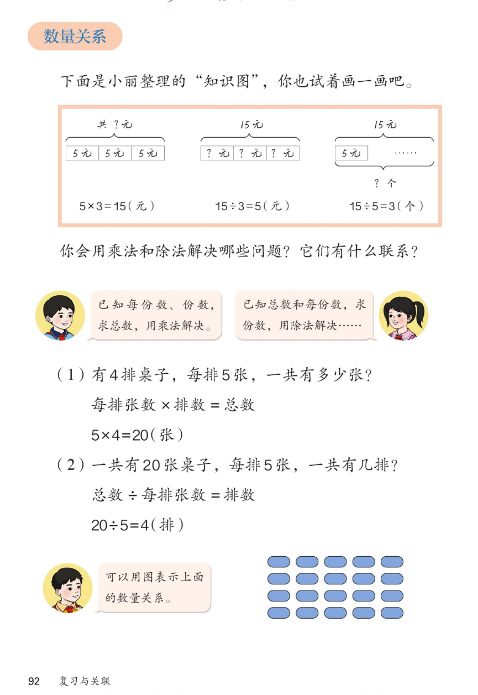

×
🔊 手机听不到声音怎么办？
① 先把手机
媒体音量调大
，确认没开静音、没连蓝牙耳机；在微信里打开的，点右上角「⋯ → 用浏览器打开」。
② 还是没声音？到应用商店免费下载
Microsoft Edge 浏览器
（它自带朗读发声），用它打开本页面就能出声。
③ 换了 Edge 仍然没声音，说明这部手机的
硬件/系统不支持
网页朗读（多为老旧机型）；近几年买的新手机一般都能正常播放。
→ 打开声音自检
🔊 六、复习与关联 · 课本第 92 页 · 数量关系
人教版《数学》二年级上册 · 有声图文带读 · 先想后看解析 · 每份数×份数=总数 · 乘除互逆解决问题
题数
6
认知
2
强化
3
拓展
1
本页重点
三幅图看懂乘除应用题 · 总数÷每份数=份数 · 用图画数量关系
🎧 分两步学：
① 解析教材图片
——纯声音读图，读到哪一块哪一块闪动提示；关键处先倒计时让你思考，再在图片下方给出解析并朗读。
② 分层提问练习
——六道分层题（认知 / 强化 / 拓展），先思考再展开解析、朗读参考答案；这一步不再回到图片。
也可以随时点任意一句话、图上任意一块单独听；点课本文字卡还会展开答案。
教材图片（点块听读，读到哪块哪块闪）

📖 人教版《数学》二年级上册 · 课本第 92 页 · 图片仅供个人学习，版权归人民教育出版社所有
🤔 想一想（点我可跳过）
课本的文字（点句子：听读 + 看答案）
三幅图
三幅钱数图各表示什么？
看答案 ▾
图1：
5×3=15
（元），3 个 5 合起来；
图2：
15÷3=5
（元），平均分成 3 份；
图3：
15÷5=3
（个），每 5 元一份；
💡 一家三口：乘 1 道、除 2 道。
用乘法
什么问题用乘法解决？
看答案 ▾
已知
每份数、份数
，求
总数
；
数量关系：每排张数 × 排数 = 总数；
💡 求<几个几>合起来，用乘法。
用除法
什么问题用除法解决？
看答案 ▾
已知
总数和每份数
，求份数 → 20÷5=4（排）；
已知
总数和份数
，求每份数 → 15÷3=5（元）；
💡 把总数平均分、或看总数里有几个几，用除法。
画图
为什么要用图表示数量关系？
看答案 ▾
4 行 5 列的椭圆图：
5×4=20
；
横看是每份数，竖看是份数；
💡 画图让数量关系一眼看清。
分层提问练习（先想后看解析）
🪑
认知
4 排桌子、每排 5 张，一共有多少张？
看解析
🤔 想一想
怎么想的：
先找
每份数
（每排 5 张）和
份数
（4 排）；问题问
一共
，就是把 4 个 5 合起来 → 用
乘法
5×4=20。
解析：
求 4 个 5 是多少，用乘法；
5×4=
20
（张）。
📐
认知
20 张桌子、每排 5 张，一共有几排？
看解析
🤔 想一想
怎么想的：
这回已知的是
总数 20
和
每份数 5
，求的是
份数
——就是问 20 里有几个 5，所以用
除法
20÷5=4。
解析：
求 20 里有几个 5，用除法；
20÷5=
4
（排）。
💰
强化
知识图第一幅图：每份 5 元、3 份，一共多少元？为什么用乘法？
看解析
🤔 想一想
怎么想的：
看三件事：
每份 5 元
、
有 3 份
、问
一共
。三份都一样多，求总数就是 3 个 5 相加，加法太麻烦 → 用
乘法
5×3=15。
解析：
已知每份数和份数，求总数，用乘法；
5×3=
15
（元）。
🔗
强化
第三幅图 15÷5=3 和第一幅图 5×3=15 有什么联系？
看解析
🤔 想一想
怎么想的：
两道题用的是
同一句口诀
三五十五；乘法把 5 和 3
合
成 15，除法把 15
分
回 3 份。方向相反，数量关系却完全一样。
解析：
都用口诀
三五十五
；
乘法合起来、除法分回去，互为
逆运算
；
💡 三道算式是一家
🪞
强化
桌子两问（1）和（2）有什么相同、有什么不同？
看解析
🤔 想一想
怎么想的：
比异同
先找相同
——都是 20 张桌子、都跟 5 有关；再看
求的是什么
：一个求总数用乘法，一个求份数用除法。
解析：
相同：都关于 20 张桌子，都和 5 有关；
不同：（1）乘法求总数，（2）除法求排数；
🪞 一正一反，正好互逆
🌈
拓展
照着三幅图的样子，再编一道用除法算的桌子问题。
看解析
🤔 想一想
怎么想的：
编题先想清
三兄弟
：每份数、份数、总数。想用除法，就把
总数和份数
当已知，去求每份数，这样三道算式才凑成一家。
解析：
20 张桌子平均分成 4 排，每排几张？
20÷4=
5
（张）；
🌈 编题也要用上每份数、份数、总数
① 解析教材图片
② 分层提问练习
⏹ 停止
纯声音 + 高亮跟随 · 想好才出解析
← 返回导航